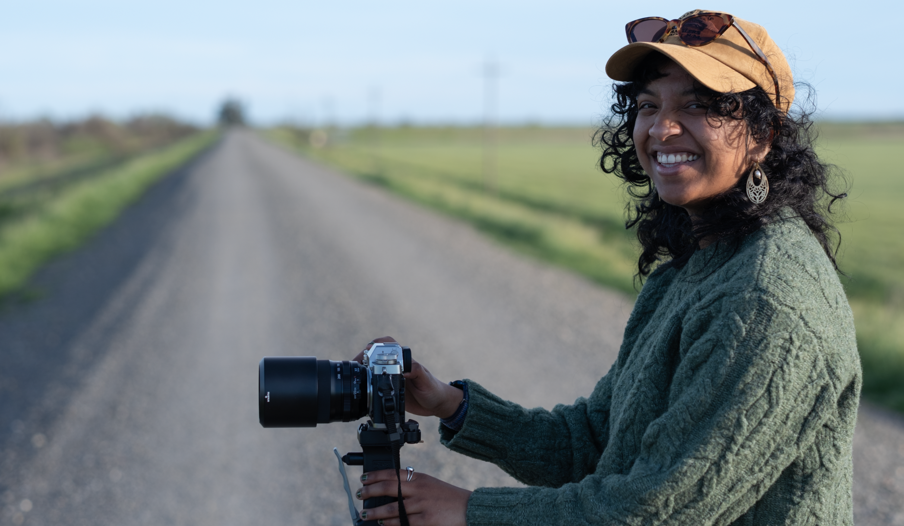

about me

hi! 👋 i'm zahra!
i'm a product designer working across interactive design & ecology, with a focused practice in human- & planet-centered design. i focus on designing multidisciplinary interactive experiences that make complex spaces, infrastructures, and communities easier to understand and engage with.
I'm completing my MFA in Interactive Design at UC Davis in June 2026, where my work focuses on designing interactive systems that explore the relationships between flood infrastructure, migratory ecologies, and agriculture in the Yolo Basin. I also worked for a summer at California State Parks as a Park Interpretive Specialist at the California State Railroad Museum, creating a digital exhibit guide that improved language accessibility and supported visitors with visual impairments.
I earned my undergraduate degree in Human-Centered Design at UC Berkeley, an interdisciplinary program blending design, sociology, psychology, and technology, along with a Certificate in Design Innovation. While at Berkeley, I founded the DEI Officer role within the Human-Centered Design Club, Berkeley Innovation, to promote greater accessibility in design communities.
My skills include graphic and visual design, interaction design, prototyping, user research, accessibility, and front-end web development (HTML/CSS/JavaScript). I am a Teaching Assistant for the Interactive Design Series at UC Davis, teaching HTML, CSS, & JS. I'm fluent in Figma and Adobe Creative Suite.
Outside of design, I enjoy sketching, knitting, sewing/mending, embroidery, baking, photography, running, and managing my handmade art business, Trinkets by Pickles.
I'm currently exploring opportunities as an assistant professor, lecturer, or post-degree teaching position, where I can bring my research and design practice into the classroom.
contact
i'm currently based in Davis, CA. if you'd like to chat about potential opportunities, collaborations, or just want to say hi, feel free to reach out!